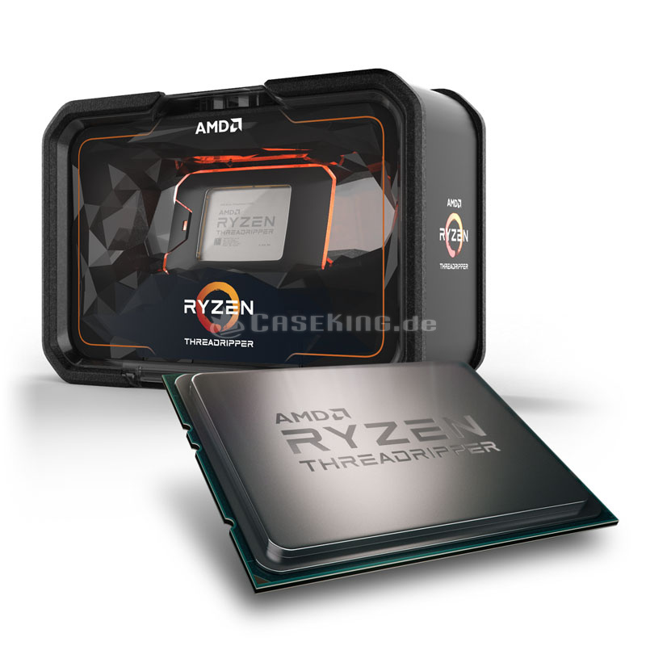

El procesador es el cerebro del sistema, justamente procesa todo lo que ocurre en la PC y ejecuta todas las acciones que existen. Cuanto más rápido sea el procesador que tiene una computadora, más rápidamente se ejecutarán las órdenes que se le den a la máquina. Este componente es parte del hardware de muchos dispositivos, no solo de tu computadora. El procesador es una pastilla de silicio que va colocada en el socket sobre la placa madre dentro del gabinete de la computadora de escritorio, la diferencia en una portátil es que está directamente soldado. El procesador está cubierto de algo que llamamos encapsulado, y de lo cual existen 3 tipos: PGA, LGA y BGA. El procesador es uno de los componentes de la computadora que más ha evolucionado, dado a que se les exige a los ingenieros que cada vez ofrezcan mejores procesadores para que las computadoras funcionen más rápidas y de forma más eficaz. Su evolución no ha sido solo interna, sino que también su forma externa fue modificada.
Marcas creadoras de procesadores
AMD
Advanced Micro Devices, Inc. es una compañía estadounidense de semiconductores establecida en Sunnyvale, California, que desarrolla procesadores de cómputo y productos tecnológicos relacionados para el mercado de consumo. Sus productos principales incluyen microprocesadores, chipsets para placas base, circuitos integrados auxiliares, procesadores embebidos y procesadores gráficos para servidores, estaciones de trabajo, computadores personales y aplicaciones para sistemas embebidos. AMD es el segundo proveedor de microprocesadores basados en la arquitectura x86 y también uno de los más grandes fabricantes de unidades de procesamiento gráfico. También posee un 8,6% de Spansion, un proveedor de memoria flash no volátil. En 2011, AMD se ubicó en el lugar 11 en la lista de fabricantes de semiconductores en términos de ingresos.
INTEL
Intel Corporation es el mayor fabricante de circuitos integrados del mundo, según su cifra de negocio anual. La compañía estadounidense es la creadora de la serie de procesadores x86, los procesadores más comúnmente encontrados en la mayoría de las computadoras personales. Intel fue fundada el 18 de julio de 1968 como Integrated Electronics Corporation (aunque un error común es el de que "Intel" viene de la palabra intelligence) por los pioneros en semiconductores Robert Noyce y Gordon Moore, y muchas veces asociados con la dirección ejecutiva y la visión de Andrew Grove.
EL MEJOR PROCESADOR DE EL 2019 HASTA EL MOMENTO ES:

Ryzen Threadripper 2950X ~ AMD
Escojimos el Ryzen, por ser lo mejor de lo mejor para tipo gaming en el 2019, tiene un precio de 927.92 €, bastante elevado, pero como se comentó son para equipos full gaming, con graficas exageradas, el procesador su arquitectura es de 64 bits, cuenta con 16 nucleos y 32 sub procesos, frecuencia base 3,5 GHz y frecuencia turbo 4,4 GHz, cuenta con 3 Cache, el L1 es 1152 KB el L2, 8192 KB, y el L3 32768 KB lo mejor de procesadores y lo mejor sin duda de AMD